OpenJDKのダウンロード及びインストール
Java の開発を行うために必要となる OpenJDK のダウンロード及びインストールについて解説します。今回は Oracle 社が提供している JDK のバイナリである Oracle OpenJDK を利用します。 2021年2月 現在で最新のものは OpenJDK 15.0.2 です。
※ Java SE と JDK の違いや OpenJDK は何なのかについては「Java SEとJDK、JRE、JVMの違いに関する解説」で解説しています。
OpenJDKのダウンロード
オラクルが提供する OpenJDK のバイナリは次の URL から取得します。
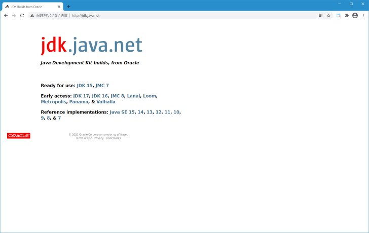
画面に表示されている「Ready for use: JDK 15, JMC 7」の「JDK 15」をクリックしてください。
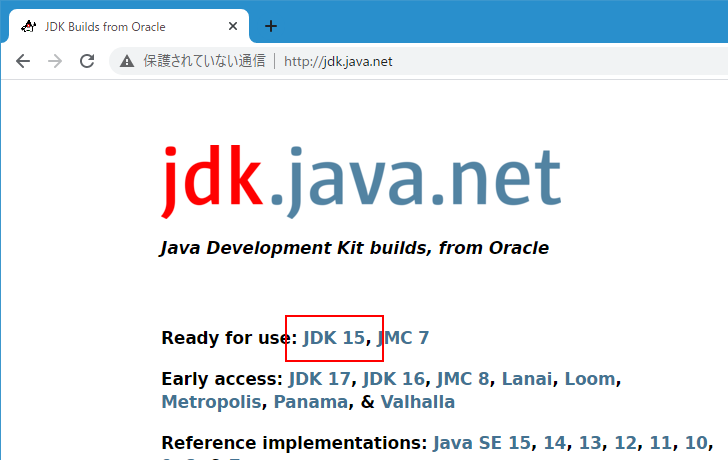
JDK 15.0.2 General-Availability Release のページが表示されます。
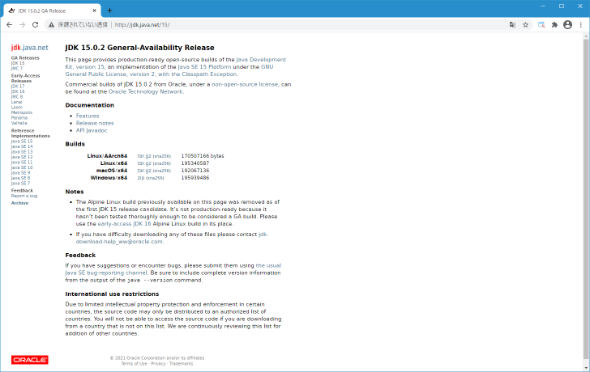
今回は Windows10 向けのものをダウンロードします。「Windows/x64」と書かれた右側にある「zip」をクリックして下さい。
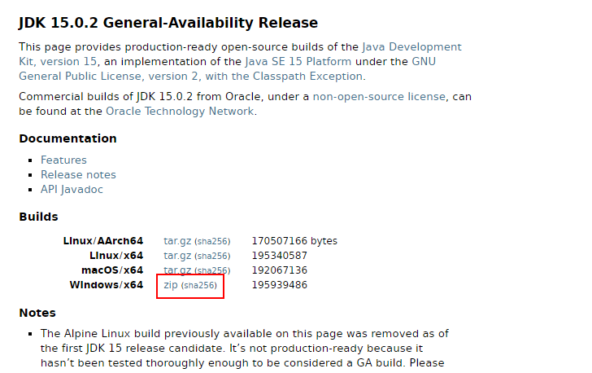
ダウンロードが開始されます。任意の場所に保存しておいて下さい。 OpenJDK のダウンロードはこれで完了です。
OpenJDKのインストール
ダウンロードしたファイル openjdk-15.0.2_windows-x64_bin.zip は圧縮ファイルになっています。解凍すると「jdk-13.0.1」というフォルダが入っていますので任意の場所に展開して下さい。今回は C:\pg\java\ ディレクトリの下に展開しました。
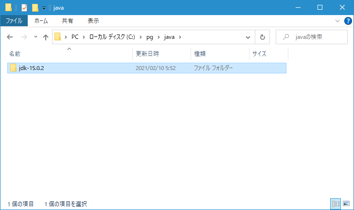
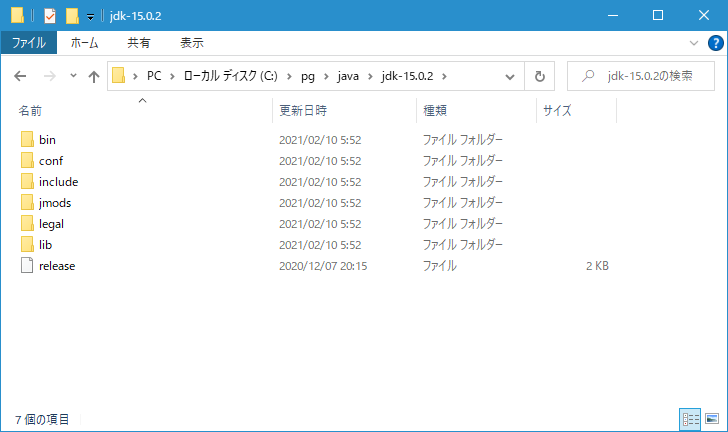
プログラムをコンパイルしたり実行したりする時に必要となるプログラムは bin ディレクトリの中に含まれています。
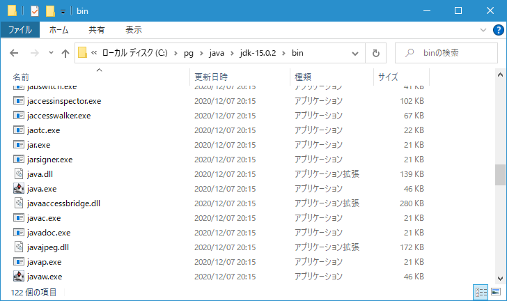
OpenJDK のインストールはこれで完了です。実際に利用するには PATH の設定をしておくと便利です。「PATHの設定及び環境変数JAVA_HOMEの設定」にて設定方法を解説しています。
Oracle OpenJDK 11が必要な場合
Oracle OpenJDK では LTS(Long Term Support、長期間サポートを受けることができるバージョン) 版はありませんが、 Oracle JDK や他の JDK バイナリの場合 3 年ごとに LTS 版が提供されます。直近のものは Java 11 で次は Java 17 となり、この LTS 版のバージョンの JDK を継続して利用されるケースも多いと思われます。
何らかの理由で Oracle OpenJDK でも最新バージョンではなく OpenJDK 11 が必要な場合、最新版とダウンロードした時と同じ URL へアクセスし、画面に表示された「11」をクリックしてください。
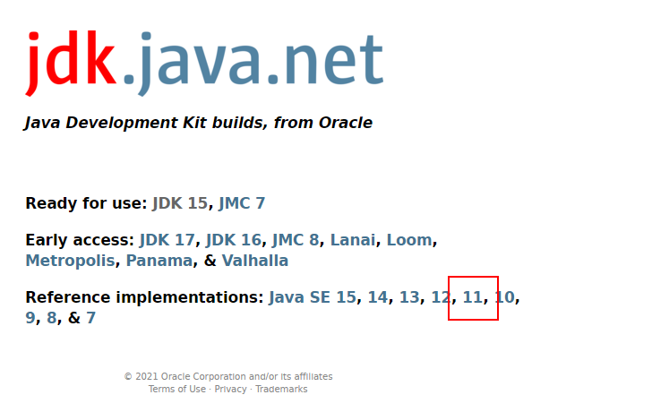
Java Platform, Standard Edition 11 Reference Implementations のページが表示されます。
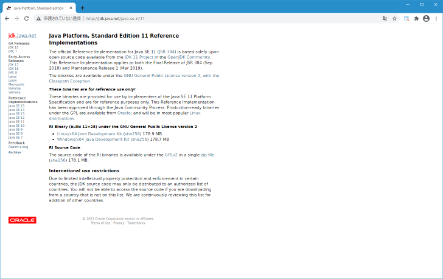
今回は Windows 向けのものをダウンロードしますので「Windows/x64 Java Development Kit (sha256) 」と書かれたリンクをクリックしてください。
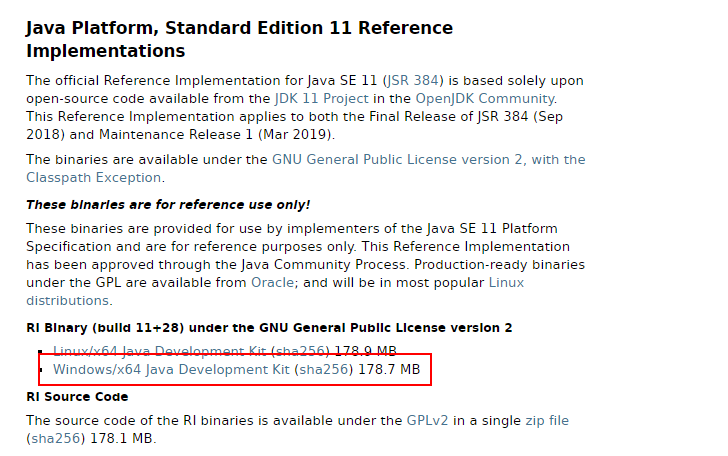
openjdk-11+28_windows-x64_bin.zip というファイルのダウンロードが開始されます。ダウンロード完了後に解凍すると「jdk-11」というフォルダが入っていますので任意の場所に展開して下さい。今回は C:\pg\java\ ディレクトリの下に展開しました。
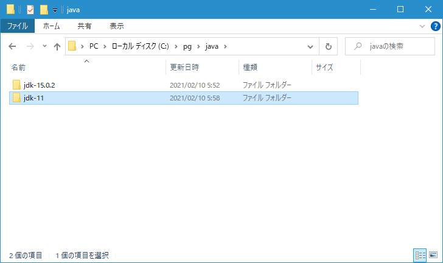
これで Oracle OpenJDK 11 をインストールすることができました。
-- --
OpenJDK のダウンロードおよびインストール方法について解説しました。
( Written by Tatsuo Ikura )

著者 / TATSUO IKURA
初心者～中級者の方を対象としたプログラミング方法や開発環境の構築の解説を行うサイトの運営を行っています。